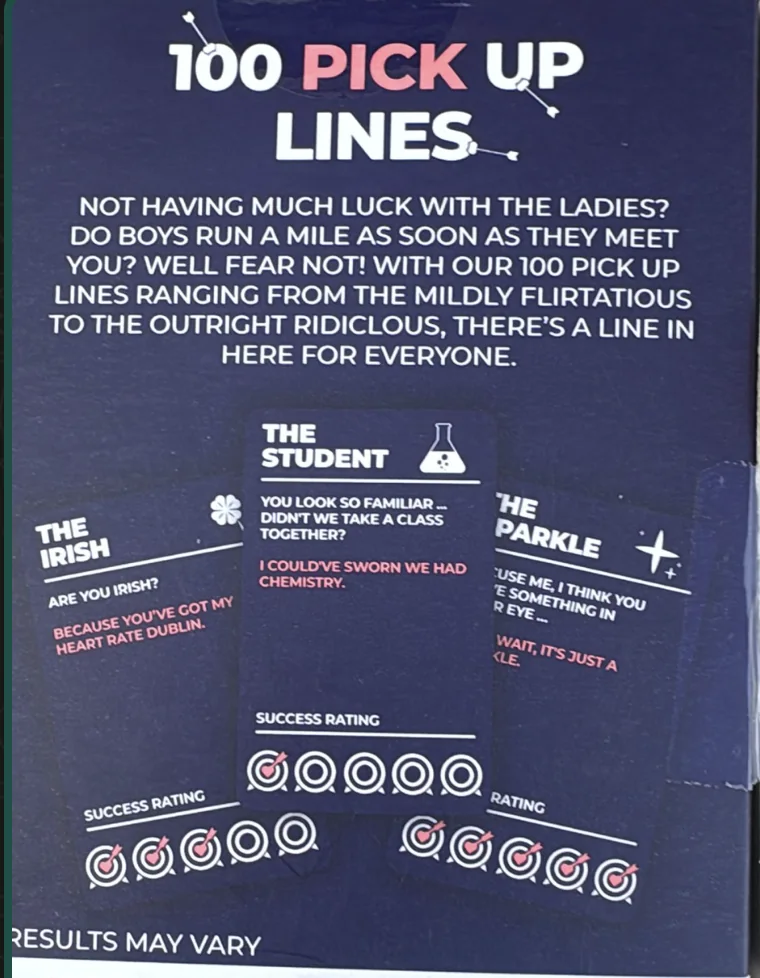
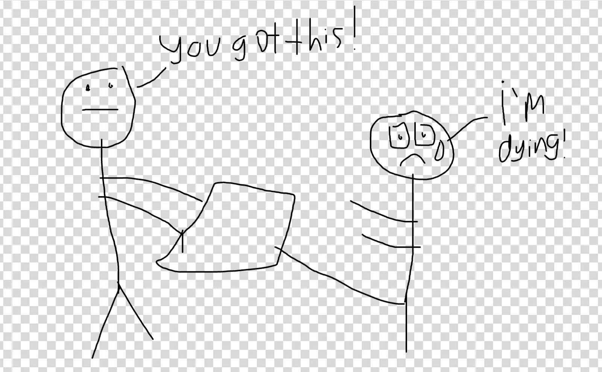
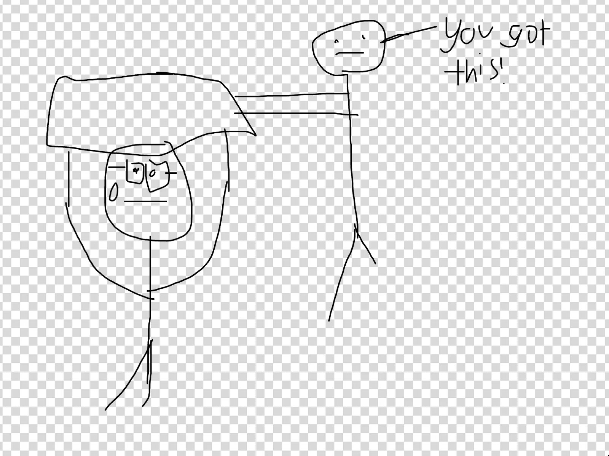
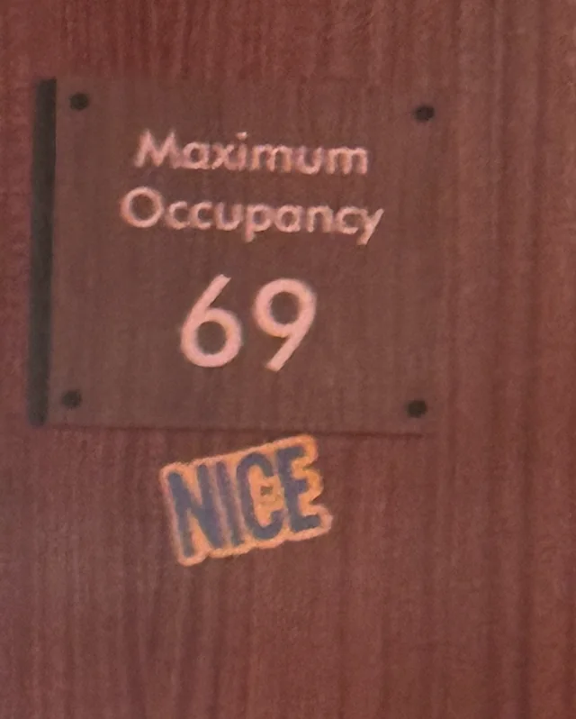
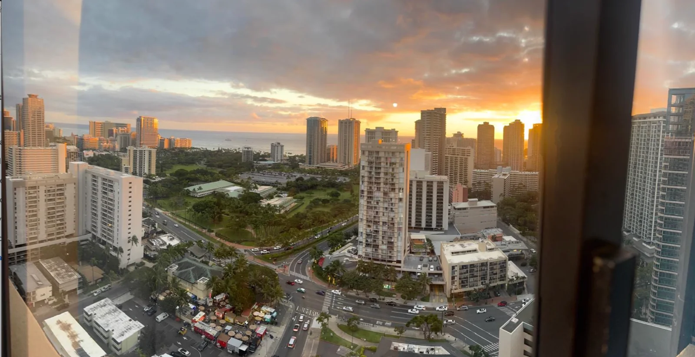

Monday
The day begins with me going for a walk. I go to Golden Gate Park and leisurely walk through most of the park. It was quite nice but nothing seriously memorable. More just one of the little moments of life that was pleasant at the time.
After going through the park I stop over at Gamescape and bought this. I’m not immediately sure how I will use it but I feel like one day this will come in handy for something.

After walking I decide on a whim to go to Krav Maga in the evening. It was really fun going back after a long time not doing it. Its definitely a tough work out (at one point I needed to do as many forward kicks as I could in a minute and by legs were searing).

Tuesday
Our day once again has me walking through GGP. I don’t really change much up from yesterday (I think). One unfortunate downside to writing these all on Sunday is that pleasant but unmemorable life events have a tendency to bleed together so I’m not 100% sure anymore what happened when.
While I’m walking I get a text from someone who read last weeks newsletter and was surprised to hear that I sang Rap God at karaoke. I decide that it would be best to
After the walk I do Krav Maga again in the evening. This time I decide to do 2 classes instead of 1. The first is a combat cardio class where we do combat related exercises to get the cardio up. Overall the class is pretty fun but surprisingly not that difficult for the most part.
There were only two difficult parts. The first was when I had to sit down and do a whole bunch of straight punches. My arms were really tired after that.
The other difficult part was where we had to grab some dumbbells and do some jab and cross punches while holding them. Originally I grab some 8lb dumbbells thinking it would be pretty simple. Several punches in I realize the exercise is harder than I think and I’m forced to make the walk of shame and grab 2lb dumbbells instead. Yes my upper body strength is lacking. Yes I know many of you reading this have invited me to go to the gym with y’all. I really should dang it.

The second class is a standard martial arts class which was difficult less because of the techniques and more because I realize I was out of practice on some of the basics. As I alluded to earlier I used to do a lot more Krav Maga 5 years ago in pre pandemic times and I was pretty reasonable back then. The fact that my form wasn’t as polished as it was back then is understandable but it was quite frustrating when I noticeably got most of the feedback from the instructor. I thought I retained a lot of my skill from back in those days but it’s not quite as much as I thought. The instructor was super nice about it of course though which was good. One thing about myself is that I think I’m pretty good at trying something new and failing at it but once I think of myself as being good at something I have a much harder time if I think I’m messing up. An important thing for me to work on.
Wednesday
Today is a rather cloudy day so I uncharacteristically rot in bed for quite a while. I don’t do anything particularly productive to be honest, I mainly just watch TV and chill until about 3. Then the clouds finally break and I realize I should do something with my life so I go for a walk, this time to J-Town and finally to Duboce park.
Afterwards I go to Midnight runners in the evening. This is a harder than normal run for me because due to 2 straight days of Krav but I manage to see it through!
Thursday
Today is the nicest day of the week so I go on an extra long walk. It’s days like these that truly bring a smile to my face.
After that I go to Tacqueira El Buen Sabor to buy a friend a burrito. He got laid off recently unfortunately so I wanted to do a little something.
From there he and I meet up with some other friends at a bar in FiDi called The Felix. From what we could tell it was originally a speakeasy where you had to press a picture frame in order to open the underground door only to find it was just a straightforward door with no picture frame.
The bar itself is nice if a bit empty. Its mainly just our group there which was good for talking. In the bar I found this

Bar night gets into a bit of a low due to one of my worse blunders in recent memory called “The Nut incident”. Part way through bar night I get super hungry and I want to eat some of the pistachios I have in my pocket. Unfortunately I happen to be sitting next to someone quite allergic to nuts. I “reason” that as long as she doesn’t eat them it would be fine. This turns out to be not fine when a nut accidentally falls next to her and she picks it up and asks what it is. I tell her and she goes to the restroom to furiously wash her hands. Thankfully she is fine in the end but it was definitely an oof on my part. I realize in retrospect I could have easily solved the problem by just excusing myself and eating the nuts away from the group but this was a thought my hungry brain could not access.
Friday
Today I mix things up and instead of walking around in GGP I walk to Ina Coolbrith park over by North Beach. Its not the most well known of parks but its got some great views of the city. I definitely think its one of North Beach’s hidden gems. From there I walk up to Fisherman’s Wharf and over to Filmore for karaoke.
I mentioned that on Wednesday one of my friends was surprised that I did Rap God so I organized karaoke so I could show him! Unfortunately he couldn’t make it but I still did the karaoke and it was quite fun. Even though he couldn’t make it the reason he couldn’t make it inspired me in a big way which I will explain soon.
I did get to show Rap God to many other people though. I got such testimonials as “I got like 90% of it”. Thats an A grade right?
Another highlight comes when a Bad Bunny song came and I did my best to try singing in Spanish which I think went better than everyone (including me) expected. Bear in mind it wasn’t good of course but it was better than expected.
After karaoke we go to a random bar / restaurant near J-Town and talk various life things til late at night and I get a ride home in the Eden-mobile.
Saturday
Our day begins with trash pickup as per usual. One thing I’m committed to with trash pickup is something I call “leading from the shadows”. Many of you reading this already know that I have the most trash pickups and lead the Saturday trash pickup. However I like to lie to people and say that I’ve only done it a couple times. I don’t really have a good reason for this other than I think its kinda funny. To do this I say that one of the assistant leaders is the main leader and I’m pleased to report I got more people to believe it than normal. Thats the sign of a good trash pickup.
After trash pickup I go to my friend’s comedy show. My friend does comedy classes over at SF Comedy College, a comedy school run by a professional standup comedian. I used to take classes and perform in shows there during the pandemic so this was a real blast from the past!
Since this is my newsletter I feel I have to be completely honest about my friends' performance. I can’t mince words. I can’t beat around the bush. It was really good!
For one thing I really appreciate that he didn’t talk about dating and sex which are the two most common topics people talk about in standup. Part of why I stopped doing standup in fact was because everyone and their mom talked about it and it got really boring to me. And his jokes were just genuinely funny. One of the better ones in my opinion was the first one where he pulled a bait and switch. I’m gonna butcher the joke sadly but it went something like this “I’m happy to announce that I just got off the apps recently <pause here for applause>. Zillow, Trulia, Apartments.com”.
What helped accentuate his performance was the fact that the person who went before him was really bad. I mean, reeeealllly bad. I really don’t like to disparage people doing these shows as it takes a lot of guts to do this but theres no other way to put it. I think he was trying to read from a storybook and narrate his life in a funny way but what he showed was one of the most disorganized stand up sets I’d seen since when I first did it. Now don’t get me wrong he was better than those dark days but it was still not very great. But you know what they say its always darkest before dawn right? I hope after my friends performance it dawned on some of the other comedians that you can talk about things other than dating or sex.
It was a great time and it got me so fired up I’m now committing to taking an SFCC class again so you all should come watch me perform.
Afterwards we celebrate by going to China Live (a Chinese restaurant). Thankfully they have the same thing I usually eat at Plow so it winds up being pretty good!
Remember how I said the guy who couldn’t make karaoke inspired me? Well the reason he couldn’t make it was because he was getting KBBQ. This inspired me to do the same so I got KBBQ at Kogi Gogi after karaoke and it slapped.
I then go home and tiredly run laundry right before I fly out to Hawaii
Sunday
I start off my morning quickly packing for my trip out. Once I do that I head on over to trash pickup.
Many of my friends are surprised I did trash pickup the day of my flight but I did specifically book my flight so I could make trash pickup that day. I even brought my suitcase to Mannys with me. Unfortunately since my flight is at 1:40 I can’t stay at trash pickup as long as I’d like though. My goal was to try to maximize time at trash pickup while minimizing the risk of missing my flight. My friends thought I was cutting it close leaving at 11:20 (one said she was second hand stressed for me and honestly I think she was more stressed than I was). But that being said I do appreciate them looking out for me like that!! It still sucks to have to go so soon though :(.
I make it to the airport around 12 and I spend the next 30 minutes waiting in line and going through security. Like pretty much everyone I’m sure airport security is a big reminder in how stupid many processes in life are. You get to see such sights as people fishing for their IDs when they had the whole flippin line to get that stuff out or the total security theatre that is TSA.
If you’ll allow me to briefly rant about the TSA, one time I was travelling with an ID I didn’t realize was expired and they said I could still go through but in addition to having my bags go through the electronic checkers they also manually opened them up and checked them then. I thought that was pretty stupid since an expired ID isn’t really any more of a security risk and I also don’t think the manual checks would really catch anything the machines wouldn’t. Its all just security theatre and every time I go through this I’m reminded how stupid it all is. Also the rules are never really consistent, sometimes I have to take my laptop out of my backpack, sometimes I don’t. Honestly its all just a bunch of bumbling bozos. I think a bunch of baboons could do a better job than those buffoons.
Despite what you might expect given my ethnicity and presence of facial hair I generally make it through security pretty easily and today was no exception.
I make it through security at about 12:30 and the first thing I think of is “damn I coulda stayed at trash pickup another 20 min”. But oh well it is what it is and at least now I don’t have to stress.
I board my flight and all things considered the flight there wasn’t too bad. I get a jump start on writing the newsletter. I don’t finish (partially because Sunday isn’t over yet), and partially because I get distracted by such activities as sleeping and playing dune imperium.
While writing the newsletter I can’t access the website I use to make such doodles so I include some placeholders as a warning
After a 5.5 hour flight and an Uber ride I make it to Waikiki and I gotta say the views look great!

I spend the rest of the day walking around taking in the sights and enjoying the beach! Sadly I don’t spend the day writing up the newsletter which is why it got delayed to today :(.